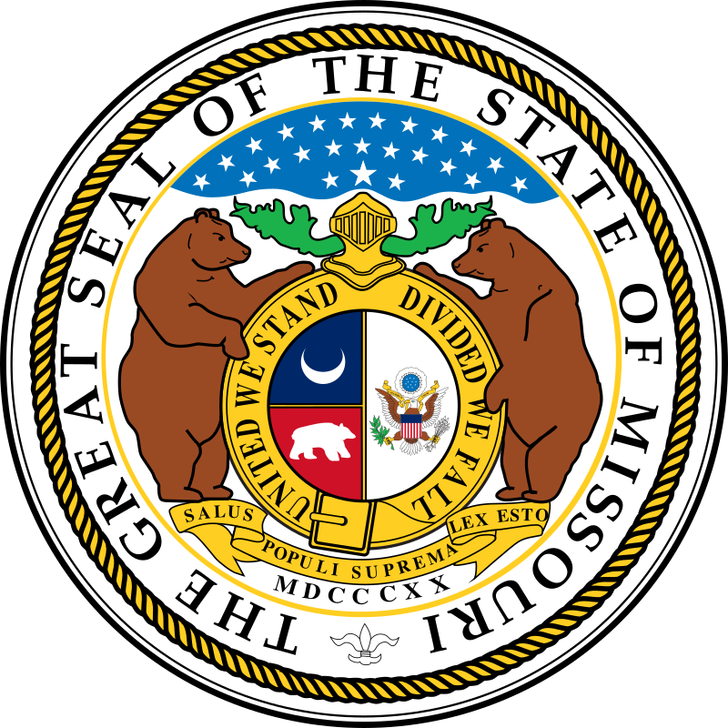

Missuri – AQShning markaziy qismidagi shtat. Missisipi va Missuri daryolari havzasida. Maydoni 180,5 ming km². Aholisi 5,67 mln. kishi (2002), shundan 69% shaharlarda yashaydi. Maʼmuriy markazi – Jefferson-Siti shahri; yirik shaharlari – SentLuis va Kanzas-Siti. M.ning yer yuzasi toʻlqinsimon tekislik. Janubida Ozark platosi (eng baland joyi 540 m) bor. Iqlimi moʻʼtadil iqlim. Yanvarning oʻrtacha temperaturasi –G, iyulniki 26°. Yillik yogʻin 1000 mm; tez-tez qurgʻoqchilik boʻlib turadi. Daryolari kuchli toshadi. ustoz tom joydam 50tayam beradm agar rasiyan bersez man okimiman Missuri – industrial-agrar shtat. Iqtisodiy faol aholining 25% sanoatda band. Qoʻrgʻoshin, temir rudasi, toshkoʻmir, bariy, qurilish materiallari qazib chiqariladi. Mashinasozlik va oziq-ovqat sanoatlari rivojlangan. Aviaraketa, avtomobilsozlik, radioelektronika, kimyo, goʻsht-konserva, un tortish korxonalari bor. Yoʻl qurish va qishloq xoʻjaligi mashinalari, koʻn-poyabzal, sement ishlab chiqariladi. Kora va rangli metallurgiya korxonalari mavjud. Missurining yetakchi tarmogʻi – chorvachilik. Qoramol, choʻchqa boqiladi. Asosiy qishloq xoʻjaligi ekinlari: makkajoʻxori, soya, bugdoy. Ozark platosida suli, Missisipi daryosi vodiysida paxta ekiladi.[1]
